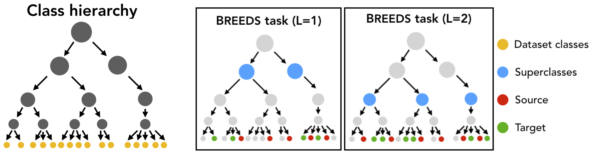

Creating BREEDS subpopulation shift benchmarks¶
In this document, we will discuss how to create BREEDS datasets [STM20]. Given any existing dataset that comes with a class hierarchy (e.g. ImageNet, OpenImages), the BREEDS methodology allows you to make a derivative classification task that can be used to measure robustness to subpopulation shift. To do this, we:
Group together semantically-simlar classes (“breeds”) in the dataset into superclasses.
Define a classification task in terms of these superclasses—with the twist that the “breeds” used in the training set from each superclasses are disjoint from the “breeds” used in the test set.
As a primitive example, one could take ImageNet (which contains many classes corresponding to cat and dog breeds), and use the BREEDS methodology to come up with a derivative “cats vs. dogs” task, where the training set would contain one set of breeds (e.g., Egyptian cat and Tabby Cat vs. Labrador and Golden Retriever) and the test set would contain another set (e.g. Persian cat and alley cat vs Mastiff and Poodle). Here is a pictorial illustration of the BREEDS approach:
{kind=link}
This methodology allows you to create subpopulation shift benchmarks of varying difficulty automatically, without having to manually group or split up classes, and can be applied to any dataset which has a class hierarchy. In this walkthrough, we will use ImageNet and the corresponding class hierarchy from [STM20].
Download a Jupyter notebook containing all the code from this walkthrough!Requirements/Setup¶
To create BREEDS datasets using ImageNet, we need to create a:
data_dirwhich contains the ImageNet dataset in PyTorch-readable format.info_dirwhich contains the following information (files) about the class hierarchy:dataset_class_info.json: A list whose entries are triplets of class number, class ID and class name, for each dataset class.class_hierarchy.txt: Every line denotes an edge—parent ID followed by child ID (space separated)—in the class hierarchy.node_names.txt: Each line contains the ID of a node followed by it’s name (tab separated).
For convenience, we provide the relevant files for the (modified) class
hierarchy here.
You can manually download them and move them to info_dir or do it
automatically by specifying an empty info_dir to
get_superclasses():
from robustness.tools.breeds_helpers import setup_breeds
setup_breeds(info_dir)
Part 1: Browsing through the Class Hierarchy¶
We can use ClassHierarchy to
examine a dataset’s (here, ImageNet) class hierarchy. Here, info_dir
should contain the requisite files for the class hierarchy (from the Setup
step):
from robustness.tools.breeds_helpers import ClassHierarchy
import numpy as np
hier = ClassHierarchy(info_dir)
print(f"# Levels in hierarchy: {np.max(list(hier.level_to_nodes.keys()))}")
print(f"# Nodes/level:",
[f"Level {k}: {len(v)}" for k, v in hier.level_to_nodes.items()])
The hier object has a graph attribute, which represents the class
hierarchy as a networkx graph. In this graph, the children of a node
correspond to its subclasses (e.g., Labrador would be a child of the dog
class in our primitive example). Note that all the original dataset classes
will be the leaves of this graph.
We can then use this graph to define superclasses—all nodes at a user-specified depth from the root node. For example:
level = 2 # Could be any number smaller than max level
superclasses = hier.get_nodes_at_level(level)
print(f"Superclasses at level {level}:\n")
print(", ".join([f"{hier.HIER_NODE_NAME[s]}" for s in superclasses]))
Each superclass is made up of multiple “breeds”, which simply correspond to the leaves (original dataset classes) that are its descendants in the class hierarchy:
idx = np.random.randint(0, len(superclasses), 1)[0]
superclass = list(superclasses)[idx]
subclasses = hier.leaves_reachable(superclass)
print(f"Superclass: {hier.HIER_NODE_NAME[superclass]}\n")
print(f"Subclasses ({len(subclasses)}):")
print([f"{hier.LEAF_ID_TO_NAME[l]}" for l in list(subclasses)])
We can also visualize subtrees of the graph with the help of the networkx and pygraphviz packages. For instance, we can taks a look at the subtree of the class hierarchy rooted at a particular superclass:
import networkx as nx
from networkx.drawing.nx_agraph import graphviz_layout, to_agraph
import pygraphviz as pgv
from IPython.display import Image
subtree = nx.ego_graph(hier.graph, superclass, radius=10)
mapping = {n: hier.HIER_NODE_NAME[n] for n in subtree.nodes()}
subtree = to_agraph(nx.relabel_nodes(subtree, mapping))
subtree.delete_edge(subtree.edges()[0])
subtree.layout('dot')
subtree.node_attr['color']='blue'
subtree.draw('graph.png', format='png')
Image('graph.png')
For instance, visualizing tree rooted at the fungus superclass yields:
{kind=link}
Part 2: Creating BREEDS Datasets¶
To create a dataset composed of superclasses, we use the
BreedsDatasetGenerator.
Internally, this class instantiates an object of
ClassHierarchy and uses it
to define the superclasses.
from robustness.tools.breeds_helpers import BreedsDatasetGenerator
DG = BreedsDatasetGenerator(info_dir)
Specifically, we will use
get_superclasses().
This function takes in the following arguments (see this docstring for more details):
level: Level in the hierarchy (in terms of distance from the root node) at which to define superclasses.Nsubclasses: Controls the minimum number of subclasses/superclass in the dataset. If None, it is automatically set to be the size (in terms of subclasses) of the smallest superclass.split: IfNone, subclasses of a superclass are returned as is, without partitioning them into the source and target domains. Else, can berand/good/baddepending on whether the subclass split should be random or less/more adversarially chosen (see paper for details).ancestor: If a node ID is specified, superclasses are chosen from subtree of class hierarchy rooted at this node. Else, if None,ancestoris set to be the root node.balanced: If True, subclasses/superclass is fixed over superclasses.
For instance, we could create a balanced dataset, with the subclass partition being less adversarial as follows:
ret = DG.get_superclasses(level=2,
Nsubclasses=None,
split="rand",
ancestor=None,
balanced=True)
superclasses, subclass_split, label_map = ret
This method returns:
superclassesis a list containing the IDs of all the superclasses.subclass_splitis a tuple of subclass ranges for the source and target domains. For instance,subclass_split[0]is a list, which for each superclass, contains a list of subclasses present in the source domain. Ifsplit=None, subclass_split[1] is empty and can be ignored.label_mapis a dictionary mapping a superclass number (label) to name.
You can experiment with these parameters to create datasets of different
granularity. For instance, you could specify the Nsubclasses to
restrict the size of every superclass in the dataset,
set the ancestor to be a specific node (e.g., n00004258
to focus on living things), or set balanced to False
to get an imbalanced dataset.
We can take a closer look at the composition of the dataset—what superclasses/subclasses it contains—using:
from robustness.tools.breeds_helpers import print_dataset_info
print_dataset_info(superclasses,
subclass_split,
label_map,
hier.LEAF_NUM_TO_NAME)
Finally, for the source and target domains, we can create datasets and their corresponding loaders:
from robustness import datasets
train_subclasses, test_subclasses = subclass_split
dataset_source = datasets.CustomImageNet(data_dir, train_subclasses)
loaders_source = dataset_source.make_loaders(num_workers, batch_size)
train_loader_source, val_loader_source = loaders_source
dataset_target = datasets.CustomImageNet(data_dir, test_subclasses)
loaders_target = dataset_source.make_loaders(num_workers, batch_size)
train_loader_target, val_loader_target = loaders_target
You’re all set! You can then use this dataset and loaders just as you would any other existing/custom dataset in the robustness library. For instance, you can visualize validation set samples from both domains and their labels using:
from robustness.tools.vis_tools import show_image_row
for domain, loader in zip(["Source", "Target"],
[val_loader_source, val_loader_target]):
im, lab = next(iter(loader))
show_image_row([im],
tlist=[[label_map[int(k)].split(",")[0] for k in lab]],
ylist=[domain],
fontsize=20)
You can also create superclass tasks where subclasses are not partitioned across domains:
ret = DG.get_superclasses(level=2,
Nsubclasses=2,
split=None,
ancestor=None,
balanced=True)
superclasses, subclass_split, label_map = ret
all_subclasses = subclass_split[0]
dataset = datasets.CustomImageNet(data_dir, all_subclasses)
print_dataset_info(superclasses,
subclass_split,
label_map,
hier.LEAF_NUM_TO_NAME)
Part 3: Loading in-built BREEDS Datasets¶
Alternatively, we can directly use one of the datasets from our paper
[STM20]—namely Entity13, Entity30, Living17
and Nonliving26. Loading any of these datasets is relatively simple:
from robustness.tools.breeds_helpers import make_living17
ret = make_living17(info_dir, split="rand")
superclasses, subclass_split, label_map = ret
print_dataset_info(superclasses,
subclass_split,
label_map,
hier.LEAF_NUM_TO_NAME)
You can then use a similar methodology to Part 2 above to probe dataset information and create datasets and loaders.